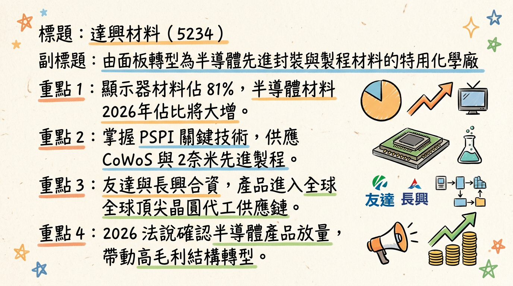
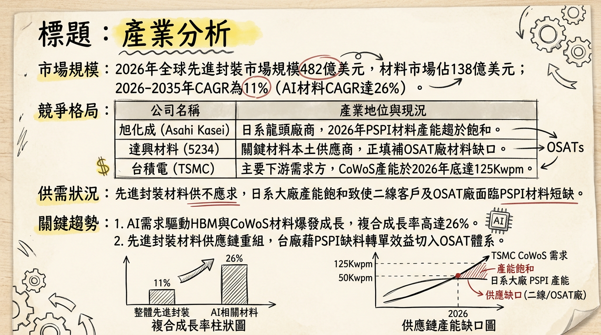
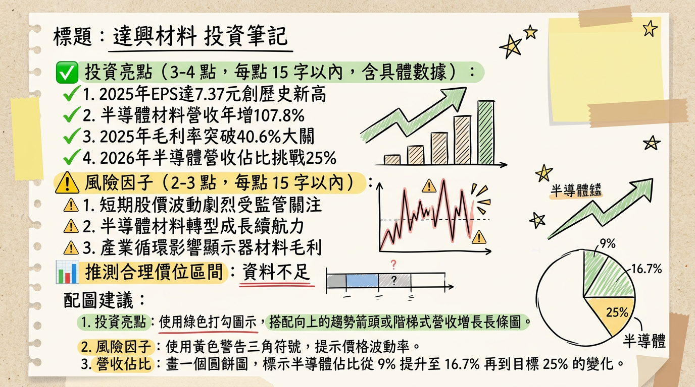

5234 達興材料 深度研究報告
一句話摘要
達興材料由面板材料轉型半導體特化材料進入收割期，受惠 CoWoS 擴產與 2 奈米量產，2026 年有望挑戰賺回一個股本（EPS 10 元），邁向高毛利「優質成長」新階段。
公司概覽
達興材料（5234）由友達光電與長興材料合資成立，為台灣特用化學材料龍頭。公司正經歷結構性轉型，業務重點從傳統顯示器材料全面轉向半導體先進封裝與先進製程材料。
2025-2026 營收結構與展望：
| 業務類別 | 2025 年營收佔比 (實際) | 2026 年營收預估 (展望) | 成長動能分析 |
|---|
| 顯示器材料 | 81.0% | 70% - 75% | 營收絕對值持平，比重隨轉型稀釋 |
| 半導體材料 | 16.7% | 25% 以上 | 爆發性成長，受惠於 2nm 及 CoWoS |
| 關鍵原材料/其他 | 2.3% | ~5% | 預計 2026 年成長 30% 以上 |
核心競爭優勢
在地化替代趨勢： 台灣半導體龍頭強化在地供應鏈，達興產品（如 PSPI）填補日系大廠（如旭化成）產能缺口。
自主研發能力： 具備自主合成特用單體與高分子能力，毛利率顯著優於代理商（如華立、崇越）。
先進製程領先： 已有 2 項產品 切入 2 奈米供應鏈，並有 13 項產品 驗證中，預計 2026 年將有 3-5 項新產品放量。
財務分析
月營收趨勢表
| 年/月份 | 月營收 (新台幣) | 月增率 MoM | 年增率 YoY |
|---|
| 2026/01 | 4.12 億元 | -0.13% | +20.07% |
| 2025/12 | 4.12 億元 | +11.35% | +10.10% |
| 2025/11 | 3.70 億元 | -8.32% | +8.77% |
| 2025/10 | 4.04 億元 | +0.25% | +14.56% |
| 2025/09 | 4.03 億元 | +5.40% | +13.01% |
| 2025/08 | 3.82 億元 | -4.74% | +8.80% |
年度獲利趨勢
- 2024 (實績)： 營收 41.18 億元，EPS 5.56 元。
- 2025 (實績)： 營收 46.3 億元，毛利率 40.6%，EPS 7.37 元（創歷史新高）。
- 2026 (預估)： 營收預期突破 52 億元，EPS 目標 8.7 至 10.0 元。
法說會重點（2026/02/26）
- 成長展望： 管理層定義 2026 為「優質成長年」，半導體材料成長率維持 High-Double-Digit (高雙位數)。
- 2nm 進展： 證實已切入 2 奈米供應鏈，目前有 2 項產品已驗證放量，隨客戶產能爬坡貢獻營收。
- 獲利品質： 2025 年半導體材料營收年增 107.8%，是毛利率站穩 40% 的關鍵。
- 股利政策： 擬配發 6.5 元現金股利，配息率達 88.2%，顯示現金流極為充沛。
券商觀點
根據 2026 年初最新報告，市場對其轉型半導體特化廠給予更高本益比評價：
| 券商名稱 | 日期 | 目標價 | 評等 | 備註 |
|---|
| 美系/本土券商 | 2026/01/23 | 367 元 | 買進 | 看好 2nm 貢獻 |
| 分析師共識 | 2026/02/26 | 328.5 元 | 強力買進 | 財報優於預期後調升 |
| 群益證券 | 2025/01/15 | 272 元 | -- | ⚠️ 過時資料 |
財報深度分析
利潤率趨勢表格
| 季度 | 毛利率 (%) | 營業利益率 (%) | 稅後淨利率 (%) | EPS (元) |
|---|
| 2025 Q4 | 41.27% | 18.23% | 17.62% | 2.04 |
| 2025 Q3 | 39.68% | 18.15% | 16.51% | 1.88 |
| 2025 Q2 | 39.80% | 17.50% | 15.80% | 1.76 |
| 2025 Q1 | 41.65% | 19.80% | 16.20% | 1.69 |
- 存貨分析： 存貨週轉天數約 47-52 天，結構轉向高價值半導體原材料，未見呆滯風險。
- 資本支出： 2026 年預計支出 3.5 億至 4 億元（年增約 40%），主要用於半導體新產線設備。
股權異動與資本結構
- 人事異動： 2026/02 董事會通過 莊鋒域 升任總經理（原執行副總），強化技術導向領導。
- 股權： 2025 年至今無重大董監事持股拋售。
- 負債： 負債比率極低（15-20%），無可轉換公司債（CB）壓力，財務體質健全。
產業分析
競爭格局比較
| 公司名稱 | 2025 毛利率 | 2025 EPS | 核心優勢 | 產業定位 |
|---|
| 達興材料 | 40.6% | 7.37 元 | 自主研發、2nm 認證 | 特化製造商 |
| 華立 | ~8-9% | ~11.5 元 | 代理規模、客戶廣度 | 通路商 |
| 崇越 | ~12-14% | ~19.0 元 | 信越代理、在地化服務 | 通路商 |
| DuPont (杜邦) | ~35-40% | -- | 全球龍頭、專利壁壘 | 國際原廠 |
市場趨勢
- 先進封裝材料： 2026 年市場規模預計達 138 億美元，AI 相關材料 CAGR 達 26%。
- 供需缺口： 日系 PSPI 產能不足，達興已在 OSAT 廠及二線晶圓廠快速卡位。
近期催化劑
1. 2026 年 1 月自結 EPS 0.71 元，獲利動能強勁。
2. 高雄橋頭新廠於 2026 年底前動土。
3. 與 4 家國際大廠展開策略合作代工，受惠材料在地化需求。
1. 顯示器業務需求僅持平，價格競爭仍大。
2. 2nm 客戶驗證進度若遞延，將影響下半年爆發力。
⭐ 成長動能時間軸
- 2025 Q4： 2 奈米供應鏈正式切入，台中港新廠空間備妥。
- 2026/02： 法說會公佈毛利率首破 40%，宣告轉型成功。
- 2026 Q2-Q3： 預計新增 3-5 項半導體新產品（含先進封裝材料）通過驗證並放量。
- 2026 Q4： 高雄橋頭新廠破土動工，為 2027-2028 年長期產能布局。
- 2026 全年： 半導體材料營收佔比挑戰 25% 臨界點。
2026 展望
* 半導體材料佔比提升帶動毛利率持續上攻。
* 關鍵原材料（生醫、綠能）外售業務年成長 30%。
* 地緣政治對原物料成本之影響。
* 客戶集中度高（友達集團、單一晶圓代工龍頭）。
投資結論
獲利升級： 達興已從面板材料股轉身為「半導體特化股」，獲利天花板隨半導體佔比拉升至 25% 以上而上移。
2026 營收爆發： 隨客戶 2nm 產能開出與 CoWoS 材料轉單效應，EPS 有望挑戰 9.5 - 10.0 元。
高配息防禦： 現金股利 6.5 元提供下檔支撐，配息率高達 88%。
建議區間： 考量 2026 年 EPS 預估及半導體材料同業本益比（約 35-45 倍），合理股價區間建議為 330 - 370 元。短線若因乖離過大拉回至月線附近（約 280-300 元）為長線佈局良機。
本報告由 AI 自動產生，資料來源為公開網路資訊，僅供參考，不構成投資建議。產生時間：2026-03-02 10:24
📊 資訊卡


